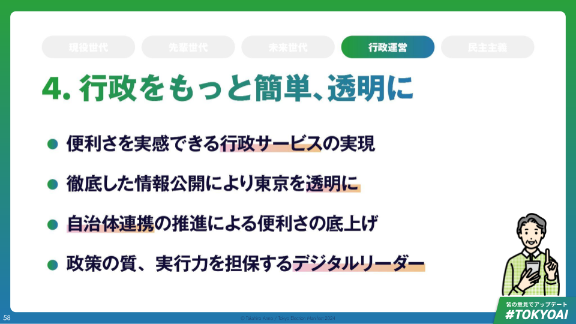

【行政運営】行政をもっと簡単・透明に

行政をもっと簡単、透明に
- 現状認識
- 都の構造改革・DXの取り組みは近年大きく進展
- しかし生活者の満足向上につながっていない
- 行政の高度化には取り組むべき課題が山積
- マニフェスト
- 便利さを実感できる行政サービスの提供
- 既存の取組を更に前に進め、行政手続のデジタル活用の100％徹底。
- 対面での手続きを維持するオムニチャンネルを前提に「行かせない」「書かせない」「待たせない」「迷わせない」行政手続の推進
- 「プル型からプッシュ型へ」個人に合わせた施策パッケージをAI活用により提案
- 徹底した情報公開により東京を透明に
- アクセス手段を多様化し、一人ひとりに合った形で情報が得られるようにする
- 都が持つ情報の公開を徹底する
- 自治体連携の推進による便利さの底上げ
- 協定等の政治的な枠組みだけでなくシステムとして連携を強め生活の利便性向上につなげる
- 政策の質、実行力を担保するデジタルリーダー
- 強いデジタルリーダーシップを持つ知事のもと、整備された基盤を適切に利活用していく
- 便利さを実感できる行政サービスの提供
現体制の下、東京都の構造改革・DXは一定進展
- 行政手続きや内部事務のデジタル化の取り組みは確実に進展
- 行政手続のデジタル化は主要手続のうち都の権限で実行可能なものの約94％のデジタル化が完了。
- さらに、全行政手続（約28000プロセス）の22000プロセスについてデジタル化を実施。
- そのほか、キャッシュレス化、ペーパーレス化、FAXレス化も大きく進展。
- デジタルサービス開発時のユーザーテスト実施状況190件
- スタートアップとの協働件数153件
- 2023年12月末時点のオープンデータカタログサイトのデータファイル数63000件
- 各行政分野でもデジタル化の取り組みが進められている
- 都庁各局ではシン・トセイにより現場レベルでのDXが推進。子育て、教育、防災など様々な分野でデジタル技術を活用したサービスの開発が進められている
これまでの取組を前に進め、住民満足を更に高めることが重要
- デジタル化を更に進める上での課題
- デジタル化による都民満足度
- DXの担い手となるデジタル人材の不足
- 今後爆増するデジタルサービスの品質確保
- 都庁の仕事を支えるシステム基盤の連携と効率化
- 区市町村での人材・ノウハウの充実
- 取り組むべきこと
- デジタルサービスの使い勝手の改善の徹底
- デジタルネイティブ以外の世代にも使いやすく便利なサービスを
- デジタルの恩恵をより広く
- 行政手続のみならず、各種政策や情報公開についてもデジタル化でアップデート
- 市区町村や近隣都道府県との連携により都民の生活圏をカバー
- 政策の質・実行力の確保
- デジタル人材の充実確保
- 知事自らデジタル化によるアップデートを推進するとともに意思決定支援体制の充実
- デジタルサービスの使い勝手の改善の徹底
- デジタルに精通したリーダーの下、取組を加速
後ろ向きな情報公開から前向きな情報公開へ
- 民間では、関係者に企業の価値を理解してもらうための前向きな手法として積極的な情報開示が進められている
- 有価証券報告書：企業が株式や債券などの有価証券を発行する際に提出する報告書であり、主に金融庁に対して提出され、企業の財務状況や業績、リスクなどが開示
- 統合報告書：企業が株主や投資家、関係者に対して財務状況や業績に関する情報を提供するための報告書であり、主に年次決算に基づいて作成され、経営の状況や将来の展望、リスクをはじめ企業活動に関する情報を幅広く開示
- 行政では…情報公開を住民とのコミュニケーションのための前向きな手段と捉え直し、公開する情報の範囲のみならず、利便性や伝え方を工夫していくべきではないか
- 情報開示＝不正を暴くというようなネガティブな文脈で使われることが多い
- そのため、後ろ向きで受動的な情報開示になる傾向があるのではないか
都民にとって使いやすい行政に
- ①行かせない
- 行政手続のオンライン申請の拡大
- 区市町村との連携を含めたリモート窓口の整備
- ②書かせない
- オンラインでの事前入力
- マイナンバーカードの読み込みによる入力自動化
- AIを活用した応答型の入力システム
- ③待たせない
- 混雑状況のリアルタイム配信
- 窓口のオンライン予約
- キャッシュレス化、内部手続のデジタル化などによる処理スピード向上
- ④迷わせない
- AIを活用した総合案内
- 同時通訳化による外国人対応の充実
- 窓口のワンストップ化
- 内部プロセスも含めあらゆる行政手続で徹底
誰も取り残さないプッシュ型の政策提供
- これまでの行政サービスは、大量の情報から自分に合ったサービスを探す必要があり、面倒さや、使えるサービスに気づかないという漏れが生まれていた
- 今後は、プッシュ型で必要な政策情報を取得できるようにする。
- 本人情報や事前に入力した興味・関心から関連する政策をプッシュ型で提案（アプリやメールでの通知を想定）
見やすい・わかりやすい情報公開により東京都の透明化
- アクセス手段を多様化し、一人ひとりに合った形で情報が得られるようにする
- 政策ダッシュボードの充実
- 元データをCSV形式などで公表
- AIを活用しわかりやすく情報提供
- 情報公開制度などこれまでの提供手法の継続
- SNSも活用した広報活動の充実
- 都が持つ情報の公開を徹底する
- 東京都の指標
- 財政状況や都の現状に関する各種統計情報
- 例：基金残高、待機児童数、犯罪被害数、救急搬送件数、観光客数、健康寿命 など
- 財政状況や都の現状に関する各種統計情報
- 行政情報
- 都の行政運営上の各種決定事項・データ
- 例：補助金支出先、各種契約の締結先 など
- 都の行政運営上の各種決定事項・データ
- 政策検討状況
- 各種政策の検討段階での議論状況
- 例：都議会議事録、予算検討段階での重点事項 など
- 各種政策の検討段階での議論状況
- 東京都の指標
東京・神奈川・千葉・埼玉が連携する枠組み/システム整備
- 自治体連携の枠組みはあるものの生活において実感をもてない状況続く
- 災害対応では、
- 非効率的な避難所/避難ルート
- 都内部での地域格差
- 国への要望提出主体の分散
- 交通では、
- 東京への一極集中による交通渋滞、満員電車
- 行政サービスでは
- GovTech東京による区市町村支援は行われているが、満足度の実感向上は道半ば
- 災害対応では、
- 協定等の政治的な枠組みだけでなくシステムとして連携を強め生活の利便性向上につなげる
- 災害対応では、
- 災害時に一律で被害状況/帰宅ルートが把握できるシステム整備
- 交通では、
- 道路交通機関のダイナミックプライシングによる混雑の軽減
- バスなどの移動手段の設計についても広域で連携
- 行政サービスでは
- GovTech東京による区市町村支援の一層推進
- 子育て・介護をはじめとする住民に身近な行政サービスでの区市町村との連携強化
- 災害対応では、
更なるDX推進のため、技術への理解があるリーダーに託す
- 過去は日本のデジタル競争力が低下していた
- デジタル競争力順位低迷
- IT人材のベンダー頼り、内部IT人材の不足
- 行政DXの遅れ
- 現在は都として様々な取り組みを実施し、基盤整備を試みている
- 東京都デジタル人材育成基本方針策定
- 都のサービスユーザーテストガイドライン制定
- しかしいぜんとして現状の課題は残る。実行力・企画力の強化は道半ば
- インタビューした都庁職員の声：GovTech全体の組織は大きくなっているが、エンジニアの比重は少なく、絶対数が足りていない
- インタビューした都庁職員の声：内部手続きが多く、政策を考える十分な時間が確保できていない。また、整備された基盤に都政のトップの理解が追いついていない
- その結果、職場としての魅力がうすれ、東京都の採用試験の応募者数は2015年の2024人から、2022年委は697人にまで大幅に減少
- 描く未来：強いデジタルリーダーシップを持つ知事のもと、整備された基盤を適切に利活用していく
- デジタル人材の活用、例えば元都庁職員の出戻り推進
- 都の意思決定の高度化、例えば各種アドバイザリーボードの設置